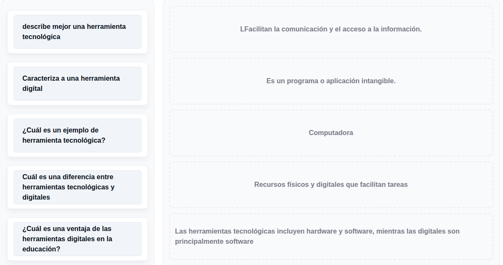
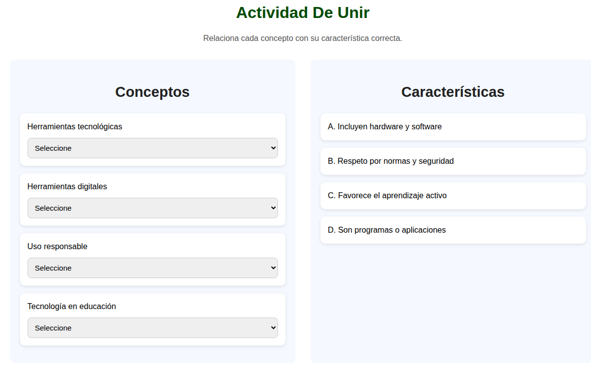

objetivos de la unidad
El objetivo de la Unidad 1 es brindar al estudiante una comprensión sólida y significativa sobre el uso de las herramientas educativas digitales en el contexto educativo, explorando no sólo su definición, sino también su impacto en los procesos de enseñanza y aprendizaje. Se busca que el estudiante reconozca cómo estas herramientas potencian la construcción del conocimiento, favorecen la participación activa y responden a las demandas de una educación mediada por la tecnología.
Contenidos Tématicos
unidad 1: Contextualizacion
- Herramientas tecnologicas y digitales en el contexto educativo
- relacion entre tecnologia y educación
- Importancia de la tecnologia en procesos de aprendizaje
- Transformación del aprendizaje con el uso de herramientas tecnológicas
- Características de las herramientas tecnológicas y digitales
- Qué son las herramientas tecnológicas.
- Qué son las herramientas digitales.
- Diferencias y relación entre ambas.
- Finalidad de las herramientas tecnológicas y digitales en el contexto educativo.
- Herramientas para investigar.
- Herramientas para organizar información.
- Herramientas para crear contenidos.
- Herramientas para comunicar y colaborar.
actividades de evaluación

actvidad 1En esta actividad se evaluara tu conocemiento sobre las herramientas tecnológicas y digitales en el contexto educativo.

actividad 2En esta actividad se evaluara tu conocemiento sobre las herramientas tecnológicas y digitales en el contexto educativo.
 actividad 3
actividad 3En esta actividad se evaluara tu conocemiento sobre las herramientas tecnológicas y digitales en el contexto educativo.